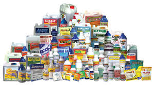
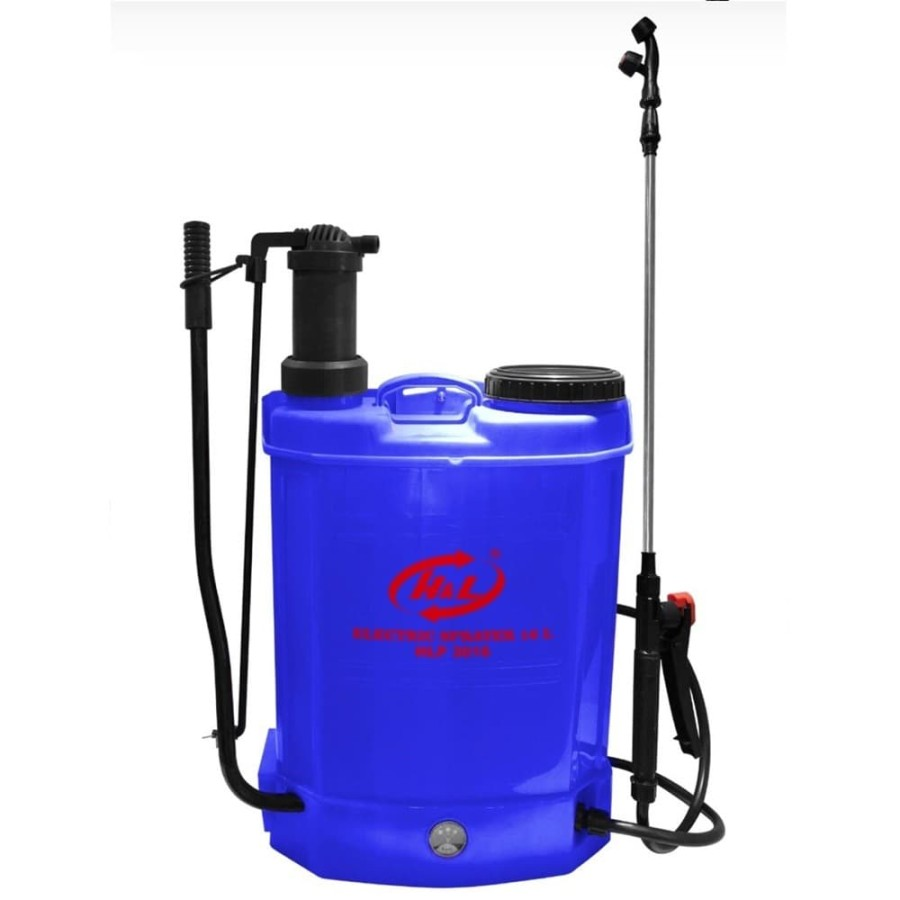

Produk Pilihan Kami

Pupuk Bersubsidi
Pupuk Bersubsidi adalah pupuk yang pengadaannya dan penyalurannya didukung oleh pemerintah dalam bentuk subsidi
- Membantu petani memperoleh pupuk dengan harga terjangkau untuk meningkatkan hasil pertanian, mendukung ketahanan pangan, dan mengurangi ketergantungan impor
- Pupuk subsidi disalurkan kepada petani yang terdaftar dalam e-RDKK dan biasanya melalui kios resmi dengan menunjukkan KTP atau kartu tani.
- Pupuk subsidi yang diberikan meliputi urea, NPK, dan organik.

Pupuk Non Subsidi"
Pupuk Non Subsidi adalah pupuk yang dijual tanpa subsidi pemerintah, dan biasanya memiliki harga yang lebih tinggi dibandingkan pupuk subsidi
- Pupuk subsidi dijual dengan harga lebih murah karena mendapat subsidi dari pemerintah, sedangkan pupuk non subsidi dijual dengan harga pasar yang lebih tinggi.
- Pupuk subsidi seringkali memiliki ketersediaan terbatas dan terkadang sulit didapatkan, sementara pupuk non subsidi lebih mudah ditemukan di pasaran.
- Pupuk subsidi umumnya memiliki jenis yang lebih terbatas, sementara pupuk non subsidi menawarkan berbagai pilihan jenis dan formula untuk memenuhi kebutuhan tanaman yang berbeda.

Pestisida "Anti Hama Super"
Pestisida ampuh dengan formula khusus untuk membasmi hama pengganggu tanaman secara cepat dan efektif. Lindungi tanaman Anda dari serangan hama.
- Efektif membasmi berbagai jenis hama.
- Melindungi tanaman dari kerusakan.
- Mudah diaplikasikan dengan hasil maksimal.

Bibit Pertanian
Benih/biji yang telah disemai sebelumnya yang akan ditanam ke lahan/media tanam dan memenuhi persyaratan dalam budidaya tanaman
- Bibit unggul memiliki ketahanan terhadap berbagai jenis hama dan penyakit yang umum menyerang tanaman sejenisnya.
- Bibit unggul dirancang untuk menghasilkan buah atau hasil panen yang lebih banyak dibandingkan bibit biasa.
- Bibit unggul memiliki kualitas yang baik, baik dari segi fisik maupun genetik, yang dapat menghasilkan tanaman yang sehat dan kuat.

Alat Semprot "Praktis Tani"
Alat semprot ergonomis dan efisien untuk aplikasi pupuk cair atau pestisida. Ringan, mudah digunakan, dan tahan lama untuk kebutuhan pertanian Anda.
- Desain ergonomis, nyaman digunakan.
- Penyemprotan merata dan efisien.
- Material berkualitas, awet dan tahan lama.